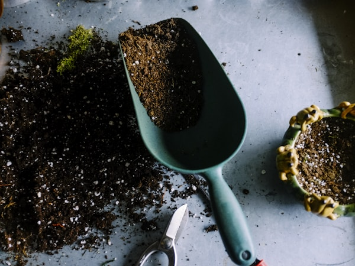
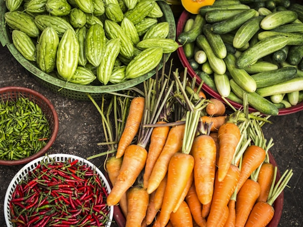
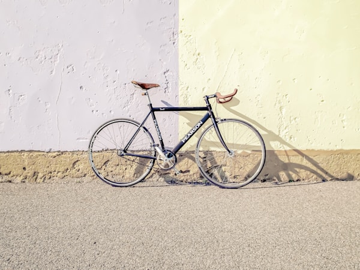
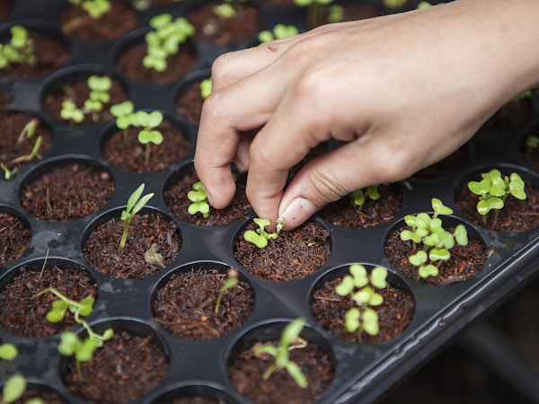
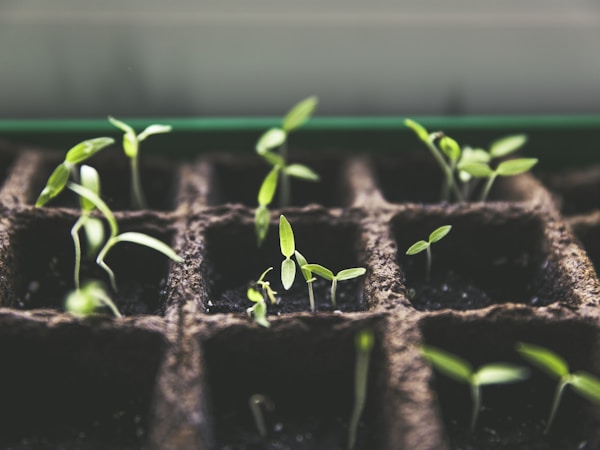

3D高斯泼溅模型展示
在城市的天际线上，我们创造了一片绿色的天堂。天台农场不仅是种植蔬果的地方，更是连接自然与都市生活的桥梁。

从高空俯瞰，整个天台农场尽收眼底。整齐的种植箱、蜿蜒的小径，构成了一幅美丽的都市田园画卷。

采用有机种植方式，不使用任何化学农药。每一颗蔬果都承载着阳光、雨露和农夫的爱心。

定期举办种植体验活动，让城市居民亲手感受播种、浇水、收获的乐趣，重新连接土地与食物。

黄昏是农场最美的时刻，金色的阳光洒在绿叶上，远处是城市的万家灯火，宁静而美好。
我们建立了完整的生态循环系统，厨余垃圾堆肥、雨水收集、蜜蜂授粉，实现可持续发展。

收获的蔬果与社区居民分享，建立了温暖的邻里关系。农场成为了社区凝聚力的纽带。
坚持有机理念，拒绝化学农药，让每一口都是自然的馈赠
天台位置优越，全天候阳光照射，作物生长更加健康茁壮
邀请社区居民参与种植，共同打造属于大家的绿色空间